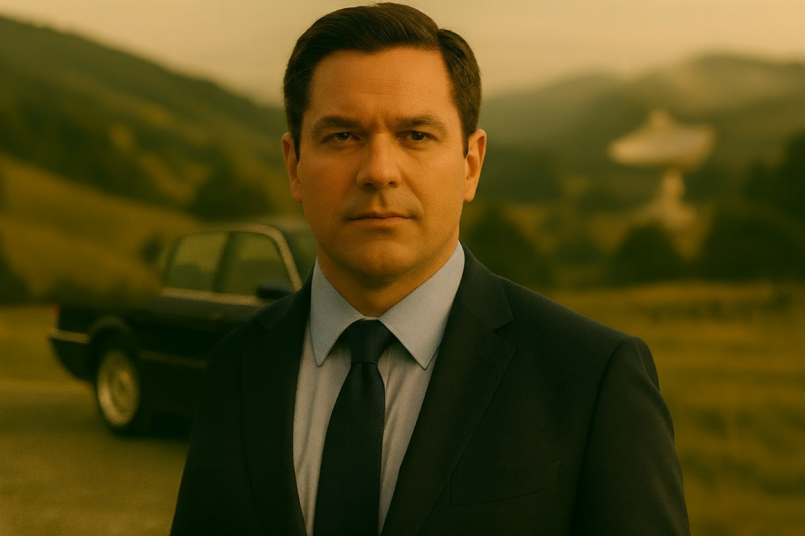
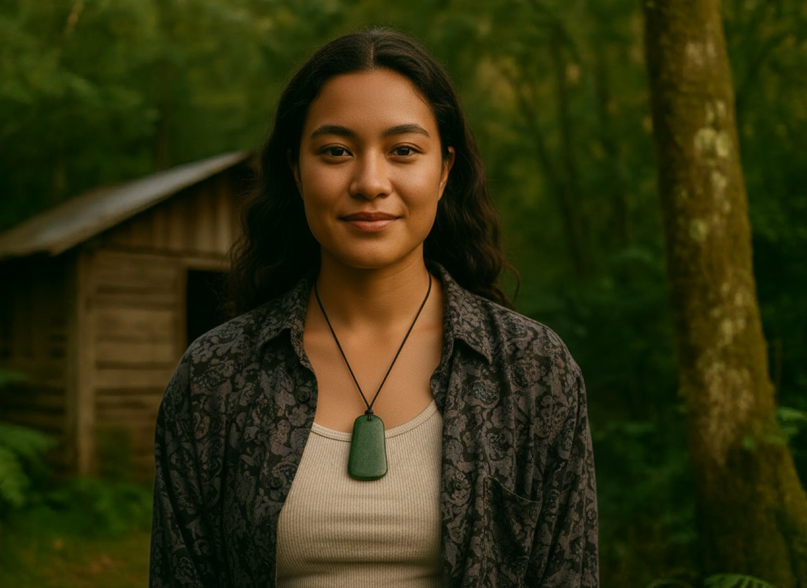
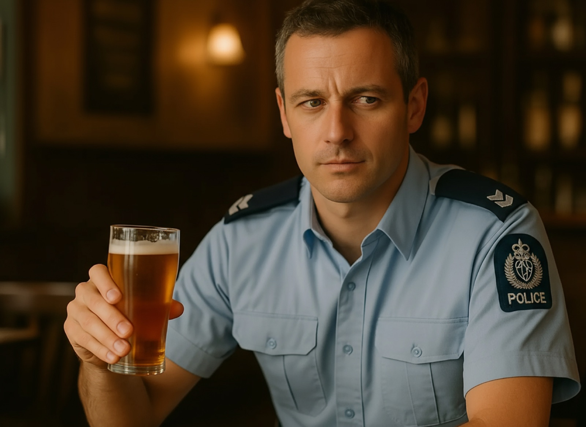
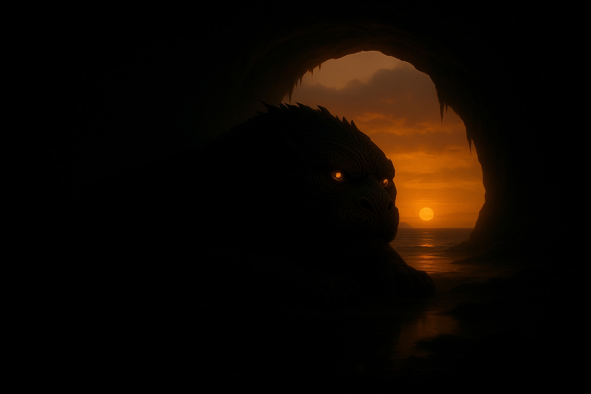

CAST & CREW
The voices and hands behind Claybourne. Recorded in New Zealand. Broadcast on 26 stations in 1998. Heard by ears that have been waiting ever since.
The original cast of the 1998 production.










Additional voice roles were performed by members of the company and guest performers.
Written, produced and scored by a small team in Auckland, 1998.
Story
Jim McLarty
William Davis
Belinda Todd
Andrew Dubber
Script
Jim McLarty
William Davis
Producers
Belinda Todd
Andrew Dubber
Sound Design
Andrew Dubber
Sean James Donnelly
Music
Victoria Kelly
Joost Langeveld
Production Company
Pronoun Productions
Claybourne was commissioned by Newstalk ZB in 1998 and broadcast across twenty-six New Zealand radio stations, four afternoons a week, just after the three o'clock news. In both its original slot and its midnight repeat, it caused a spike in listenership.
It won the New Zealand Radio Award for Best Dramatic Production, became the most popular spoken word programme on MP3.com, and is widely recognised as the first serialised radio drama distributed as a podcast online.
Ninety-six episodes were produced, with the assistance of NZ On Air, before the series was cancelled after six months. The full one-year story arc was written. The town was real in the writers' heads, and it stayed real for the listeners who followed it week by week.
Nearly thirty years later, Te Irirangi opens its doors again.